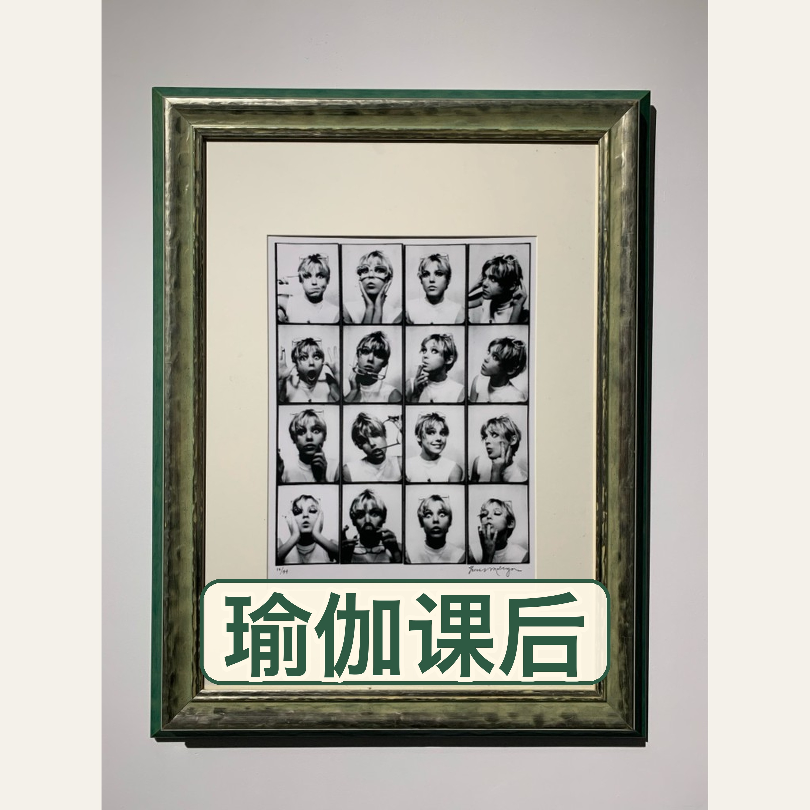

Joyce 的播客
个人知识播客：AI 应用、餐饮/消费行业、阅读与生活方式。
订阅 RSS：feed.xml（可粘贴到小宇宙搜索栏）
内心确信，才是职业选择的底层逻辑
性格与环境错位、信念如何左右选择、岗位抓手缺失，以及两套向内锚定方向的工具。

个人知识播客：AI 应用、餐饮/消费行业、阅读与生活方式。
订阅 RSS：feed.xml（可粘贴到小宇宙搜索栏）
性格与环境错位、信念如何左右选择、岗位抓手缺失，以及两套向内锚定方向的工具。